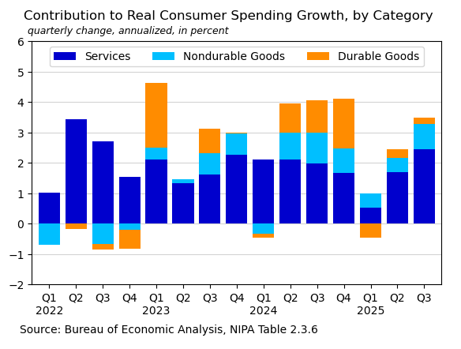
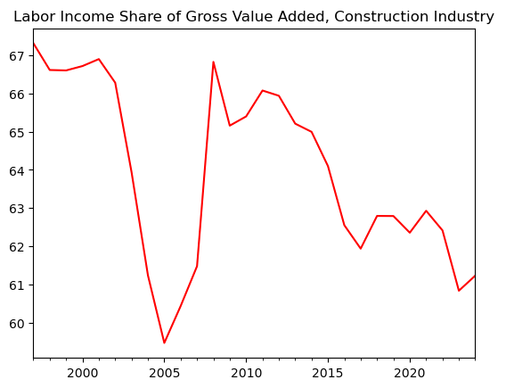

Bureau of Economic Analysis (BEA) API with Python
The BEA API provides access to national accounts data including GDP, consumer spending, and industry statistics. This tutorial demonstrates how to use Python to retrieve and analyze data from the BEA API.
This notebook offers two examples: the first fetches NIPA table data to calculate consumer spending growth by category, and the second shows how to navigate API metadata to find dataset parameters.
Background
BEA
The Bureau of Economic Analysis is part of the U.S. Department of Commerce. BEA produces economic statistics including GDP, personal income, and industry accounts. You can read more about BEA here.
API Registration
To use the BEA API, you need to register for a free API key. The examples below assume the API key is stored in a separate config file.
Python
The examples use Python 3.x with the requests and pandas packages.
Example 1: Fetch NIPA Table
This example requests NIPA table 2.3.6 (Real Personal Consumption Expenditures by Major Type of Product) for the latest five years.
Import Libraries
In[1]:
import requests
import pandas as pd
from config import bea_key as api_key # File with API keyConstruct API Request
The API URL is built from several components: the base URL with your API key, the dataset name, table ID, frequency, years, and format.
In[2]:
# Components of request
base = f'https://apps.bea.gov/api/data/?&UserID={api_key}'
dset = '&method=GetData&datasetname=NIPA'
tbl = 'T20306' # Real PCE by Major Type of Product: NIPA Table 2.3.6.
freq = '&Frequency=Q'
yr = ','.join(map(str, range(2021, 2026)))
fmt = '&ResultFormat=json'
url = f'{base}{dset}&TableName={tbl}{freq}&Year={yr}{fmt}'Request Data
In[3]:
# Request data
r = requests.get(url)Process the Data
The API returns JSON data which Python converts to a dictionary. The data includes thousands separators which are removed. The TimePeriod column is converted to datetime. Consumer spending growth (pce) and category contributions (res) are then calculated.
In[4]:
# Read as pandas dataframe and organize
df = pd.DataFrame(r.json()['BEAAPI']['Results']['Data'])
df['Value'] = df.DataValue.str.replace(',','').astype('float')
df['Date'] = pd.to_datetime(df.TimePeriod, format='mixed')
data = df.set_index(['Date', 'SeriesCode'])['Value'].unstack()
pce = (((data['DPCERX'].pct_change() + 1) ** 4) - 1) * 100
s = {'DSERRX': 'Services', 'DNDGRX': 'Nondurable Goods',
'DDURRX': 'Durable Goods'}
res = (data[s.keys()].diff().div(data['DPCERX'].diff(), axis=0)
.multiply(pce, axis=0).dropna()
.loc['2022':].rename(s, axis=1))
res.index.name = ''Visualize Results
A stacked bar chart shows the contribution of each category to overall consumer spending growth.
In[5]:
# Create chart
ax = (res.plot(kind='bar', stacked=True, figsize=(6.7, 4),
rot=0, color=['mediumblue', 'deepskyblue', 'darkorange'],
width=0.8, zorder=3))
ax.legend(ncols=3, loc='upper center')
ax.set_ylim(-2, 6)
ax.axhline(0, lw=0.5, color='gray', zorder=0)
ax.grid(axis='y', zorder=0, color='lightgray')
ax.set_xticklabels([f'Q1\n{i.year}' if i.month == 1 else f'Q{(i.month+2)/3:.0f}'
for i in res.index])
title = 'Contribution to Real Consumer Spending Growth, by Category'
subtitle = 'quarterly change, annualized, in percent'
ax.text(-0.02, 1.09, title, transform=ax.transAxes, fontsize=12);
ax.text(-0.01, 1.03, subtitle, transform=ax.transAxes, fontsize=9, style='italic');
footer = 'Source: Bureau of Economic Analysis, NIPA Table 2.3.6'
ax.text(-0.03, -0.2, footer, transform=ax.transAxes, fontsize=10);Out[5]:
Example 2: Collect API Parameters
This example shows how to navigate API metadata to find dataset parameters. Using the metadata, we can discover the codes for tables and industries we want to request.
Fetch Table List
Request the list of available tables in the GDPbyIndustry dataset. Table 25 (Composition of Gross Output) is what we want for this example.
In[6]:
# Components of request
base = f'https://apps.bea.gov/api/data/?&UserID={api_key}'
get_param = '&method=GetParameterValues'
dataset = '&DataSetName=GDPbyIndustry'
param = 'TableID'
# Construct URL from parameters above
url = f'{base}{get_param}{dataset}&ParameterName={param}&ResultFormat=json'
# Request parameter information from BEA API
r = requests.get(url)
# Show the results as a table:
pd.DataFrame(r.json()['BEAAPI']['Results']['ParamValue']).set_index('Key').head()Out[6]:
| Desc | |
|---|---|
| Key | |
| 1 | Value Added by Industry (A) (Q) |
| 5 | Value added by Industry as a Percentage of Gross Domestic Product (A) (Q) |
| 6 | Components of Value Added by Industry (A) |
| 7 | Components of Value Added by Industry as a Percentage of Value Added (A) |
| 8 | Chain-Type Quantity Indexes for Value Added by Industry (A) (Q) |
Fetch Industry List
Request the list of industry codes. Industry code 23 is the Construction industry.
In[7]:
param = 'Industry'
# Construct URL from parameters above
url = f'{base}{get_param}{dataset}&ParameterName={param}&ResultFormat=json'
# Request parameter information from BEA API
r = requests.get(url).json()
# Show the results as a table:
pd.DataFrame(r['BEAAPI']['Results']['ParamValue']).set_index('Key').head(10)Out[7]:
| Desc | |
|---|---|
| Key | |
| 11 | Agriculture, forestry, fishing, and hunting (A,Q) |
| 111CA | Farms (A,Q) |
| 113FF | Forestry, fishing, and related activities (A,Q) |
| 21 | Mining (A,Q) |
| 211 | Oil and gas extraction (A,Q) |
| 212 | Mining, except oil and gas (A,Q) |
| 213 | Support activities for mining (A,Q) |
| 22 | Utilities (A,Q) |
| 23 | Construction (A,Q) |
| 311FT | Food and beverage and tobacco products (A,Q) |
Fetch Industry Data
Using the parameters discovered above, fetch table 25 for industry 23 (Construction). The results are organized into a pandas dataframe.
In[8]:
m = '&method=GetData'
ind = '&TableId=25'
freq = '&Frequency=A'
year = '&Year=ALL'
fmt = '&ResultFormat=json'
indus = '&Industry=23' # Construction Industry
# Combined url for request
url = f'{base}{m}{dataset}{year}{indus}{ind}{freq}{fmt}'
r = requests.get(url)
df = pd.DataFrame(r.json()['BEAAPI']['Results'][0]['Data'])
df = df.replace('Construction', 'Gross Output')
df = df.set_index([pd.to_datetime(df['Year']),
'IndustrYDescription'])['DataValue'].unstack(1)
df = df.apply(pd.to_numeric)
df.tail()Out[8]:
| Compensation of employees | Energy inputs | Gross Output | Gross operating surplus | Intermediate inputs | Materials inputs | Purchased-services inputs | Taxes less subsidies | Value added | |
|---|---|---|---|---|---|---|---|---|---|
| Year | |||||||||
| 2020 | 597.8 | 30.3 | 1804.4 | 415.3 | 845.7 | 636.6 | 178.8 | -54.4 | 958.7 |
| 2021 | 636.9 | 45.7 | 1985.6 | 400.8 | 973.5 | 749.7 | 178.1 | -25.6 | 1012.1 |
| 2022 | 694.3 | 50.9 | 2204.0 | 404.5 | 1091.6 | 840.5 | 200.3 | 13.6 | 1112.4 |
| 2023 | 745.0 | 51.0 | 2389.0 | 465.4 | 1164.5 | 854.9 | 258.6 | 14.1 | 1224.6 |
| 2024 | 799.3 | 45.4 | 2511.5 | 491.2 | 1206.1 | 869.9 | 290.7 | 14.9 | 1305.4 |
Visualize Results
Create a chart showing the labor income share of gross value added in the construction industry.
In[9]:
# Labor income share of industry value added
data = (df['Compensation of employees'] / df['Value added']) * 100
data.index.name = ''
title = 'Labor Income Share of Gross Value Added, Construction Industry'
ax = data.plot(color='red', title=title);Out[9]:
Conclusion
The BEA API provides access to a wealth of national accounts data. By exploring the API metadata, you can discover available datasets, tables, and parameters to construct targeted data requests.